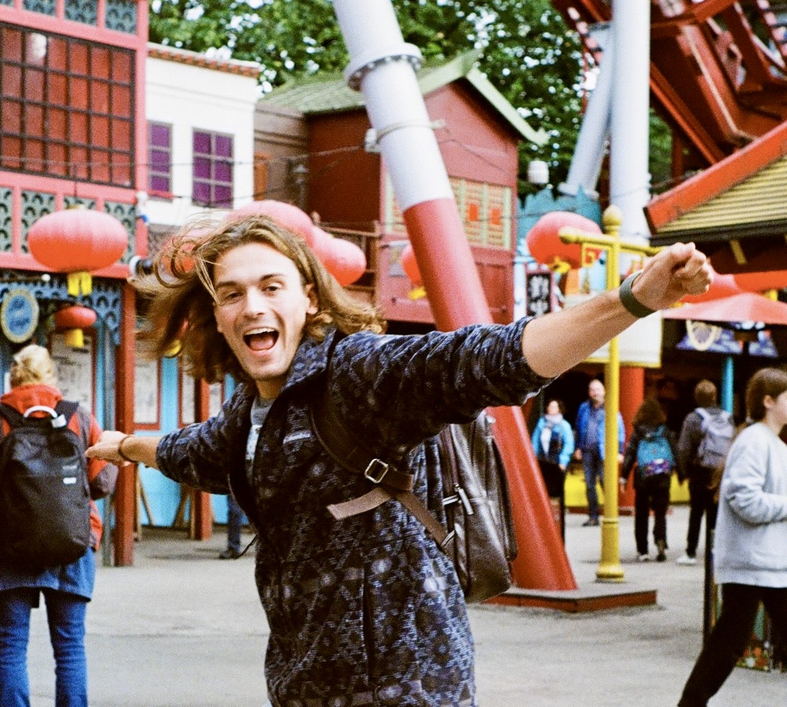

I research black hole physics and gravitational waves at the Center of Gravity, in Copenhagen,
advised by Vitor Cardoso.
You can read my CV here.

My office is in the old Niels Bohr Institute, built in 1920. When I need to unwind, I take a stroll in Fælledparken, or grab a pastry.
I am (slowly) studying Art History at UNED. I studied physics, mathematics, and philosophy in Madrid and Manchester. I am a member of the Diversity, Equity, and Inclusion committee of the LISA Consortium.
Art, I suspect, is gradually becoming humanity’s last true language. I have failed at it in every medium I’ve ever tried, yet art remains central to my life. Lately, I think about how science may open new frontiers for art. My dream is to build an instrument based on the harmonic series of a black hole. If this resonates with you, let’s connect.
Before, I evaded geese in Waterloo, I sang Wonderwall one too many times (twice) in Manchester, and I grew up in Madrid, which I pronounce Madriz. My family comes from Monreal del Campo, along with the best saffron.